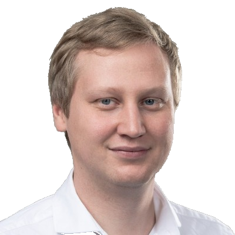

Data governance & platformy
ŘSD · Powertica · ČEZ Prodej
Od strategie a standardů data governance po návrh datových platforem a podnikového skladu. Azure Data Lake, Databricks, ADF, Oracle a Power BI.
Nezávislá IT architektura · data · transformace
Pomáhám vedení firem najít, co v IT opravdu podporuje byznys, co zbytečně stojí peníze a jak modernizovat bez rozbití systémů, které fungují.
ARCHITECTURE LENS / 01
Odhalit duplicity, neomezit schopnost firmy fungovat.
Ilustrační scénář, nikoli data konkrétního klienta.
Od roku 2012 propojuji podnikovou architekturu, data a realizaci změn. Působím jako analytik, architekt i projektový manažer v energetice, výrobě a e-commerce.
Profesní profil na LinkedInu ↗
Od nezávislého pohledu na stav IT až po bezpečné provedení změny.
Revize současného stavu (AS-IS). Zmapování zbytečných nákladů na licence a zastaralý hardware. Návrh štíhlého cílového stavu (TO-BE), který šetří rozpočet.
Vytvoření IT roadmapy, definování standardů a řízení technického dluhu. Sladění business požadavků s reálnými možnostmi vývoje.
Kvalita dat, metadata, Azure Data Lakehouse, Databricks a integrace (EDI) pro zajištění spolehlivého reportingu pro management.
Koordinace dodavatelů, řízení rozsahu, rozpočtu a rizik. Nastavení jasné governance a transparentního reportingu pro představenstvo.
Architektonický dohled nad implementacemi (S/4HANA, ECC). Ochrana klienta před vendor-lockem a zbytečnými úpravami standardu.
Návrh a sizing dedikovaných výpočetních stanic a serverů. Eliminace nevhodně předimenzovaného hardware a stavba odladěných uzlů přesně na míru podnikovým zátěžím.
Tři oblasti, ve kterých propojuji návrh, rozhodování a dodávku.
ŘSD · Powertica · ČEZ Prodej
Od strategie a standardů data governance po návrh datových platforem a podnikového skladu. Azure Data Lake, Databricks, ADF, Oracle a Power BI.
ČEZ Distribuce · SAPiens
Vedení architektury a koordinace závislostí transformačního programu napříč ERP, datovým skladem a digitálními portály.
CERVA GROUP · Mitas
Návrh a realizace B2B/B2C portálů, SAP e-commerce a EDI integrací pro Evropu i Severní Ameriku.
Správce a chat: Ing. Jiří Kika, IČO 24513083, fyzická osoba podnikající dle živnostenského zákona. Zprávy a ID relace uchováváme ve Firebase Firestore 180 dní od vytvoření. TTL je maže obvykle do 24 hodin po uplynutí lhůty.
E-mailové upozornění: Pokud zpráva obsahuje rozpoznaný e-mail nebo telefon, přes EmailJS odešleme její text, kontakt a ID relace. Kopie v e-mailové schránce uchováváme 180 dní od doručení.
Jazyk: Zvolený jazyk ukládáme v localStorage tohoto prohlížeče, dokud jeho data sami nesmažete.
Do chatu neposílejte údaje, které nejsou nutné k vyřízení dotazu. S dotazy nebo žádostmi o výmaz se obraťte na info@kika-solutions.com.